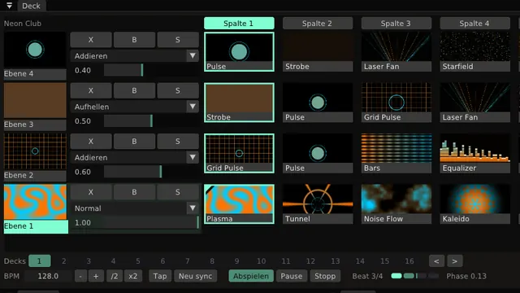
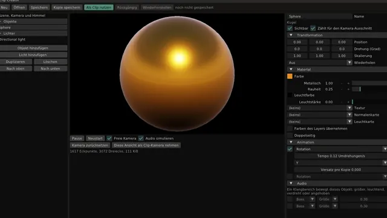
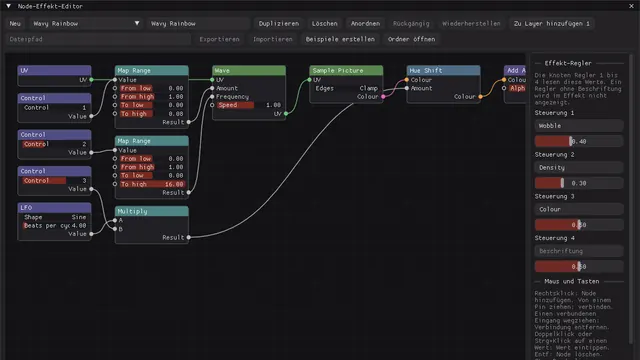
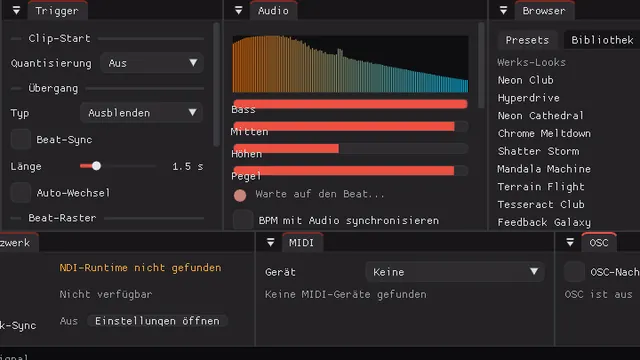
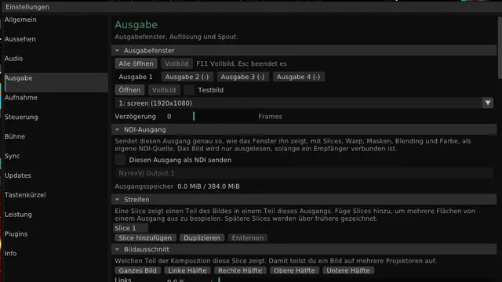
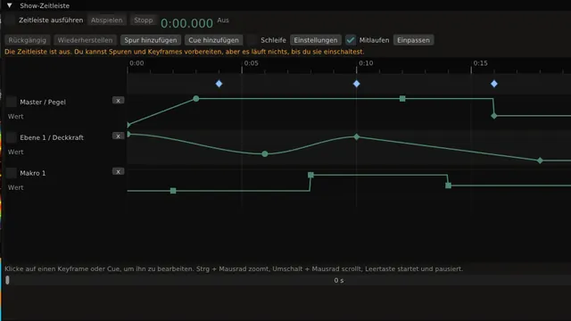
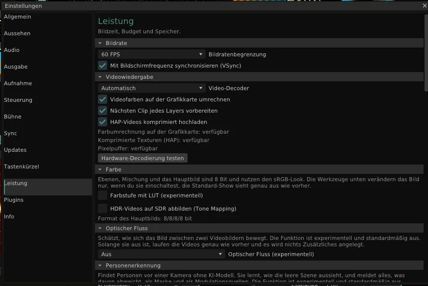

Clips und Effekte
Mehr als 50 Clips (Fraktale, Raymarching-3D-Szenen, Neon-Geometrie, Laser, Spektrum-Visuals) und mehr als 70 Effekte. Wirf eigene Shader-Dateien dazu, auch von Shadertoy.
Eigene Shader →NyrexVJ ist ein kostenloses VJ-Programm im Geist von Resolume Arena. Es spielt generative Clips, Videos und 3D-Szenen auf Layern, legt Effekte darüber, folgt deiner Musik und schickt das Bild an OBS oder in ein Vollbild-Ausgabefenster. Natives C++ und OpenGL, keine Spiele-Engine, eine Programmdatei für Windows und eine für Linux.
MIT-Lizenz, kostenlos, ohne Konto und ohne Werbung. Entwicklungsstände erscheinen als Nightly-Release, es kann also noch an Ecken und Kanten hapern.

Drei Schritte vom ersten Start bis zum Bild auf der großen Leinwand. Das Handbuch führt dich in fünf Minuten durch.
Klick auf eine Zelle im Clip-Raster oder drück die Tasten 1 bis 8, um eine ganze Spalte zu starten. Jedes Deck hat vier Layer, und zwischen 16 Decks gleitest du hin und her.
Klick in der Bibliothek auf einen Effekt, wähl eine Audioquelle und lass Bass, Mitten, Höhen und Kick jeden Regler bewegen. Das Tempo tippst du mit der Leertaste.
Gib das Bild unter Windows per Spout an OBS weiter, schick es über NDI oder öffne Vollbild-Ausgabefenster für Projektoren.
Ein kurzer Rundgang. Jede Karte führt zum Kapitel des Handbuchs, das sie erklärt.

Mehr als 50 Clips (Fraktale, Raymarching-3D-Szenen, Neon-Geometrie, Laser, Spektrum-Visuals) und mehr als 70 Effekte. Wirf eigene Shader-Dateien dazu, auch von Shadertoy.
Eigene Shader →
Spiel .glb- und .gltf-Modelle wie jeden Clip, oder bau im Clip Creator Szenen aus Formen, Modellen und Lichtern und speichere sie als portable .nyxclip-Dateien.
Der Clip Creator →
Bau eigene Effekte in einem Node-Editor. Ein Graph aus 68 Nodes (Bild, Audio, Beat, Mathe, Farbe, Verzerrung, Rauschen, Formen) wird zu einem Shader, und Effekte sind kleine Dateien, die du teilen kannst.
Der Node-Effekt-Editor →
Layer und Effekte folgen dem Systemaudio, einem Mikrofon oder einem Line-In. Steuere die Show mit einem MIDI-Controller, über OSC oder von einer Webseite auf deinem Handy.
Audio und Musik →
Bis zu vier Ausgabefenster mit Slices, Polygon-Masken, Farbkorrektur, Projection Mapping, Warping und Edge Blending. Spout, NDI und Aufnahme sind eingebaut.
Ausgänge, Mapping und OBS →
Automatisiere Regler und Schalter mit Keyframes, folge LTC- oder MTC-Timecode und löse Cues aus. Sie ist optional und aus, bis du sie einschaltest.
Die Show-Zeitleiste →Ein VJ-Programm, das die ganze Grafikkarte auffrisst, hilft auf einem Party-Rechner nicht. NyrexVJ ist schlank gebaut und zeigt dir, wohin die Zeit geht.


Drück in NyrexVJ F1, und das Handbuch öffnet sich in einem eigenen Fenster, mit Inhaltsverzeichnis, Suche und Links zwischen den Kapiteln. Es erklärt, wie du installierst und startest, wo jedes Fenster und jede Einstellung liegt, wie du eine Show spielst und was du tust, wenn etwas nicht klappt.
Derselbe Text steht auf dieser Webseite, auf Deutsch und auf Englisch, du kannst ihn also lesen, bevor du etwas herunterlädst.
Einen Regler lernst du mit einem Klick, per OSC steuerst du aus der Ferne, eine Browser-Seite dient als Fernbedienung am Handy, und eine REST-API bedient Skripte.
Sie folgt dem Audio, LTC- oder MTC-Timecode, MIDI-Clock oder Pro DJ Link, und eine Cue-Liste löst zur richtigen Zeit aus.
Nimm das fertige Bild als H.264, HEVC, ProRes, HAP und mehr auf, bis 4K, mit Ton von deinem Audioeingang.
Zeig das Bild von Unreal Engine, TouchDesigner oder einem Spiel über Spout, dazu NDI-Streams, Webcams oder Capture-Karten.
Füge Modulationsquellen und Bildquellen über eine kleine C-Schnittstelle hinzu. Plugins sind nativer Code und aus, bis du sie aktivierst.
Werks-Looks zum Loslegen, deine eigenen Presets und eine Sitzung, die automatisch gespeichert wird und nach einem Absturz zurückkommt.
Englisch, Deutsch, Spanisch, Französisch, Italienisch, Portugiesisch, Niederländisch und Japanisch, dazu deine eigene Sprache als kleine .json-Datei.
Schalte die ganze Oberfläche zwischen Studio, Orange, Blau, Rot, Grün, Lila, Pink, Cyan, Gold und Mono um.
MIT-Lizenz. Der Code, die Roadmap und die Entscheidungen dahinter liegen auf GitHub, und Issues und Pull Requests sind willkommen.
Ja. Es ist Open Source unter der MIT-Lizenz, ohne Konto, ohne Werbung und ohne Tracking.
Unter Windows als einzelne .exe-Datei und unter Linux (x64) als einzelne Datei oder als Archiv. Linux braucht glibc 2.35 oder neuer, eine X11- oder XWayland-Sitzung und einen Grafiktreiber mit OpenGL 3.3. Für macOS gibt es keine Builds.
Ja. Schick das Bild an OBS oder nimm das Ausgabefenster auf, und nutze die VRChat-Parameter der Seite Bühne, wenn du magst.
Nur um nach Updates zu suchen und, wenn du die Schaltfläche drückst, um die FFmpeg-Bibliotheken für Video herunterzuladen. Alles andere funktioniert offline.
Ja, weil das Programm nicht signiert ist. Wähle Weitere Informationen, dann Trotzdem ausführen. Jeder Build hat eine SHA-256-Liste, und das Programm prüft sie beim Update selbst.
Fang mit dem Kapitel Fehlersuche im Handbuch an. Für Fehler und Ideen eröffne ein Issue auf GitHub.
Eine Datei, kein Installer, kein Konto. Lad sie herunter, drück F1, und in fünf Minuten spielst du.